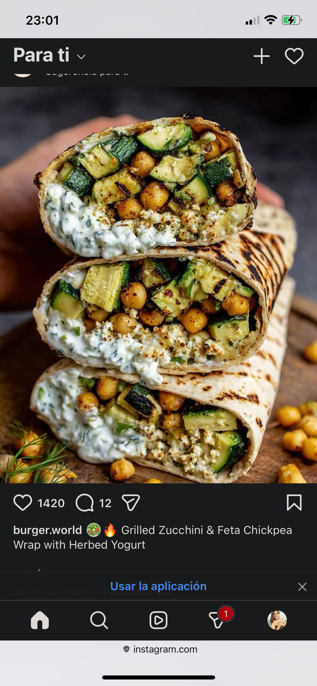

Wrap de calabacín, garbanzos y feta con yogur a las hierbas
Ingredientes
2×
- 1 calabacín
- 1 bote de garbanzos cocidos
- aceite de oliva
- comino
- 150 g de yogur
- eneldo
- menta
- limón
- sal
- 2 tortillas de trigo
- 100 g de feta

Preparación
Paso 1
Cortar 1 calabacín en dados y asarlo a la plancha. Tostar en la sartén 1 bote de garbanzos cocidos con aceite de oliva y comino.
Paso 2
Mezclar 150 g de yogur con eneldo, menta, limón y sal.
Paso 3
Calentar 2 tortillas de trigo en la plancha, rellenar con el calabacín, los garbanzos, 100 g de feta desmigado y el yogur, y enrollar.
Resumen
1 calabacín
1 bote de garbanzos cocidos
aceite de oliva
comino
Cortar asarlo Tostar
150 g de yogur
eneldo
menta
limón
sal
Mezclar
2 tortillas de trigo
100 g de feta
Calentar enrollar